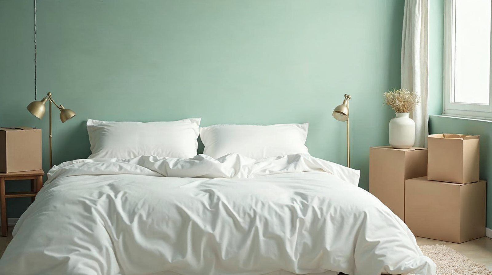
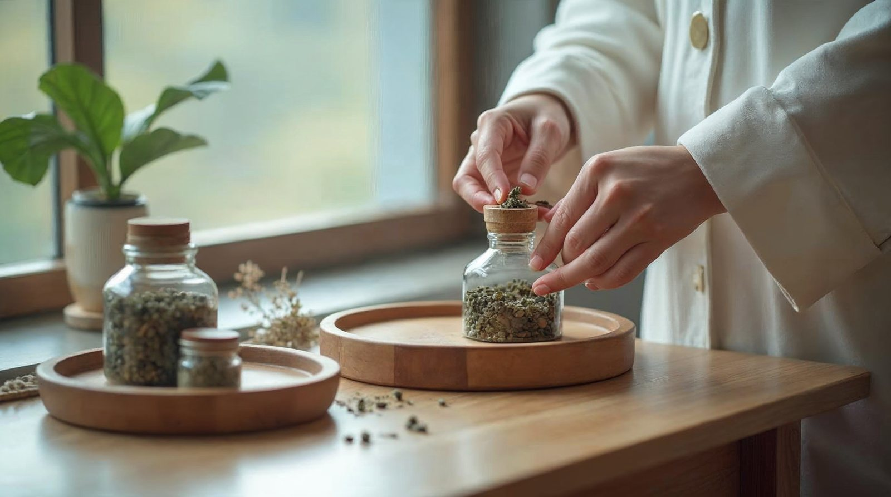
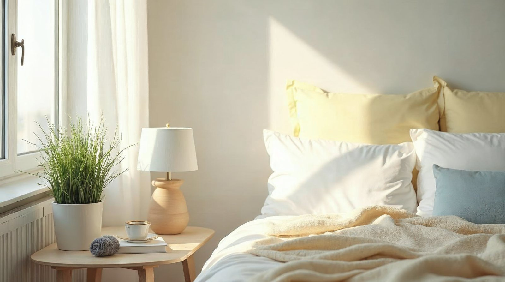
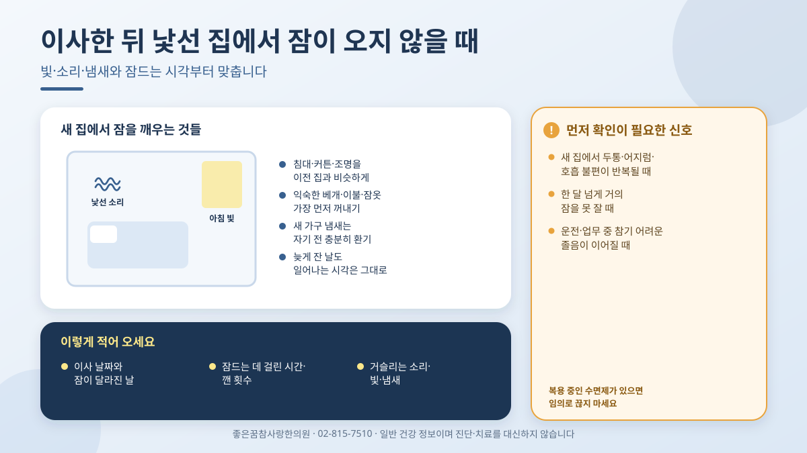

이종호 한의사 감수좋은꿈참사랑한의원 대표원장 (한의사 면허번호 19769)발행 2026-11-23 · 수정 2026-11-26
이 글의 차례
- 왜 이런 불편이 생길 수 있나요
- 왜 이사 뒤에는 몸까지 함께 지치나요
- 새 집 적응 때문인지, 다른 이유가 겹친 것인지 어떻게 구분하나요
- 먼저 이렇게 여쭙니다
- 일상에서 먼저 해 볼 수 있는 것
- 이사 후 첫 2주, 하루를 이렇게 꾸려 보세요
- 상황별 예시
- 가족마다 적응 속도가 다를 때는 어떻게 하나요
- 새 침실, 이렇게 점검해 보세요
- 스스로 점검해 보세요
- 이사 뒤 잠을 오히려 흔드는 습관은 무엇인가요
- 잠 기록은 어떻게 적으면 좋을까요
- 한의원에서 함께 살필 수 있는 경우
- 상담 전에 알아 두시면 좋은 것
- 새 동네와 친해지는 작은 방법
- 얼마나 지켜보고 언제 상담할까요
- 이렇게 기록해 오시면 상담이 쉬워집니다
- 이런 증상은 먼저 확인이 필요합니다
- 관련 글
이삿짐을 정리하느라 몸은 지쳐 있는데 막상 누우면 눈이 말똥말똥한 분이 많습니다. 집이 바뀌면 잠도 한동안 낯설어합니다. 대개 몇 주 안에 익숙해지지만, 그동안 잠자리를 어떻게 꾸리느냐에 따라 적응 속도가 달라집니다.
왜 이런 불편이 생길 수 있나요
- 낯선 공간에서는 몸이 주변을 살피느라 경계를 쉽게 풀지 못해 잠이 얕아지기 쉽습니다.
- 창문 방향과 커튼이 바뀌면 아침 빛이 들어오는 시각이 달라져 일찍 깨기도 합니다.
- 도로 소음이나 엘리베이터 소리처럼 처음 듣는 소리는 익숙한 소리보다 잠을 더 깨우기 쉽습니다.
- 이사 준비로 며칠씩 늦게 자고 몸을 많이 쓰면 오히려 긴장이 풀리지 않는 경우가 있습니다.
왜 이사 뒤에는 몸까지 함께 지치나요
이사는 마음의 일이기 전에 몸의 큰 노동입니다. 며칠 동안 상자를 들고 허리를 굽혔다 펴기를 반복하면 허리와 어깨 근육이 밤까지 긴장을 풀지 못합니다. 그러면 누워도 편한 자세를 찾기 어려워 뒤척임이 늘어납니다.
식사도 함께 흔들립니다. 주방 정리가 늦어져 배달 음식이나 늦은 끼니가 이어지면 속이 더부룩한 채로 눕게 되고, 그만큼 잠이 얕아지기 쉽습니다. 첫 주에는 냄비 하나와 그릇 몇 개라도 먼저 꺼내 간단한 저녁을 일정한 시각에 드시길 권합니다.
해야 할 일 목록도 은근한 부담입니다. 전입 신고, 인터넷 설치, 주소 변경, 고장 난 곳 수리 연락처럼 끝나지 않은 일이 머릿속을 떠다니면 누운 뒤에도 생각이 이어집니다. 낮에 종이 한 장에 적어 두고 하나씩 지워 가면 밤에 붙잡는 생각이 줄어듭니다.
새 집 적응 때문인지, 다른 이유가 겹친 것인지 어떻게 구분하나요
이사 뒤 잠이 얕아지는 것은 흔하지만, 모든 뒤척임을 새 집 탓으로만 돌리면 놓치는 것이 생깁니다. 저는 잠이 달라진 시점과 그 무렵 함께 달라진 것들을 하나씩 나눠서 봅니다.
- 새 집 적응이 중심이라면 첫 주가 가장 힘들고, 주말을 몇 번 지나며 조금씩 덜해지는 흐름이 보이는 경우가 많습니다.
- 출퇴근길이 길어졌다면 잠의 깊이보다 잠의 길이가 줄어든 것이 문제일 수 있어, 누운 시각과 일어난 시각부터 계산해 봅니다.
- 이사와 함께 직장이나 학교가 바뀌었다면 새 자리에 대한 긴장이 잠에 같이 실려 있을 수 있습니다.
- 새 집에서만 코가 막히거나 목이 칼칼하고 밖에서는 덜하다면 실내 습도와 환기를 먼저 살펴봅니다.
- 이사 전부터 잠이 얕았다면 이사는 계기일 뿐이어서, 원래 있던 잠의 습관을 함께 들여다봅니다.
먼저 이렇게 여쭙니다
- 이사한 뒤 며칠째 잠이 달라졌나요?
- 새 집에서 유난히 거슬리는 소리나 불빛, 냄새가 있나요?
- 이사 준비로 늦게 자고 일찍 일어난 날이 이어졌나요?
- 새 방의 온도와 습도는 어떤가요?
- 낮에 몸을 많이 쓰고도 밤에 몸이 쉬지 못하는 느낌인가요?

일상에서 먼저 해 볼 수 있는 것
- 침대 위치와 커튼, 조명을 이전 집과 비슷하게 맞춰 보기
- 익숙한 베개와 이불, 잠옷을 가장 먼저 꺼내 두기
- 새 가구나 벽지 냄새가 있다면 자기 전 충분히 환기하기
- 늦게 잔 날에도 일어나는 시각은 크게 바꾸지 않기
- 이사 뒤 한 주는 낮에 밖에서 걷는 시간을 짧게라도 넣기
- 짐 정리는 침실부터 먼저 끝내고, 풀지 않은 상자는 잠자리에서 보이지 않는 곳에 두기
- 커튼을 아직 달지 못했다면 임시로 두꺼운 천이나 수면 안대로 새벽 빛 가리기
- 밤에 화장실 가는 길이 낯설다면 발밑을 비추는 작은 수면등 켜 두기
이사 후 첫 2주, 하루를 이렇게 꾸려 보세요
아침에는 커튼을 열고 새 창으로 들어오는 빛을 받아 보세요. 창 방향이 바뀌면 빛이 드는 시각도 달라집니다. 일어나는 시각을 먼저 정해 두고 그 시각에 밝은 빛을 보는 것이 몸의 시계를 새 집에 맞추는 첫걸음입니다.
낮에는 새 동네를 일부러 조금 걸어 보시길 권합니다. 마트와 약국, 버스 정류장 위치를 몸으로 익혀 두면 낯선 곳이라는 긴장이 생각보다 빨리 줄어듭니다. 짐 정리로 지쳤다면 낮잠은 20~30분 안쪽으로 짧게 둡니다.
저녁에는 짐 정리를 끝내는 시각을 미리 정해 두세요. 상자 하나만 더 풀자는 마음이 자정까지 이어지면 몸은 지쳤는데 머리는 일하는 상태로 눕게 됩니다. 정리를 마친 뒤에는 따뜻한 물로 씻고 집 안 조명을 낮춥니다.
밤에 들리는 소리는 낮에 미리 정체를 알아 두면 도움이 됩니다. 냉장고가 돌아가는 소리, 위층 배관에 물이 흐르는 소리처럼 무엇인지 아는 소리는 몸이 덜 경계하기 때문입니다. 처음 며칠은 낮에 한 번 귀를 기울여 소리를 정리해 보세요.
상황별 예시
- 예를 들어 주말 이틀 동안 이사를 마치고 바로 출근한 직장인이라면, 퇴근 뒤 밤늦게까지 짐을 풀다 보니 잠드는 시각이 매일 달라지기 쉽습니다. 짐 정리는 밤 9시까지로 끊고, 첫 주에는 침실과 욕실만 먼저 정리해 잠자리부터 안정시키는 순서를 권합니다.
- 예를 들어 큰길가 집으로 옮긴 뒤 새벽 버스 소리와 창밖 불빛에 4~5시면 깨는 경우, 침대를 창문에서 먼 벽 쪽으로 옮기고 암막 커튼이나 안대, 잔잔한 백색소음을 써 봅니다. 깬 뒤 바로 휴대폰을 보기보다 눈을 감고 숨을 길게 내쉬며 누워 있어 봅니다.
- 예를 들어 자녀 집 근처로 옮겨 오신 어르신이 밤에 깨면 방향이 헷갈려 불안하다고 하신다면, 침실에서 화장실까지 수면등을 두어 넘어지지 않게 하는 것이 먼저입니다. 낮에는 동네 공원이나 시장을 걸으며 바깥 빛을 받고 새 동네에 익숙해지는 시간을 가져 봅니다.
가족마다 적응 속도가 다를 때는 어떻게 하나요
같은 집으로 옮겨도 잠이 돌아오는 속도는 사람마다 다릅니다. 누군가는 이틀 만에 푹 자는데 누군가는 몇 주째 뒤척이면, 뒤척이는 쪽은 나만 예민한가 싶어 마음까지 무거워집니다. 적응이 느린 것은 성격 탓이 아니라 몸이 주변을 살피는 정도가 다르기 때문인 경우가 많습니다.
아이는 낯선 방에서 혼자 자기를 무서워할 수 있습니다. 첫 주에는 잠들 때까지 곁에 있어 주고, 늘 보던 인형이나 이불을 먼저 꺼내 주세요. 방문을 조금 열어 두거나 복도에 작은 불을 켜 두는 것도 낯섦을 덜어 줍니다.
부부가 잠드는 시각이 다르다면 늦게 자는 사람이 들어올 때 큰 조명을 켜지 않도록 미리 정해 두세요. 새 집은 문소리와 발소리가 어떻게 울리는지 서로 아직 모르기 때문에, 처음 몇 주만이라도 조금 더 조용히 움직이자고 이야기해 두면 서로의 잠을 지키기 쉽습니다.
새 침실, 이렇게 점검해 보세요
- 누운 자리에서 눈을 떴을 때 보이는 불빛이 있는지 확인합니다. 셋톱박스나 공유기 불빛, 창밖 간판 빛이 생각보다 거슬릴 수 있습니다.
- 손을 창틀 가까이 대 보고 찬 바람이 들어오는지 봅니다. 외풍이 있으면 침대를 창에서 조금 떨어뜨립니다.
- 머리 쪽 벽 너머가 욕실이나 현관인지 살펴봅니다. 물소리나 문소리가 나는 벽이라면 머리 방향을 바꿔 봅니다.
- 습도계가 있다면 잠들기 전 습도를 확인하고, 건조하면 젖은 수건을 널어 둡니다.
- 이불과 베개 커버는 이전 집에서 쓰던 세제로 빨아 두면 익숙한 냄새가 남아 낯선 방에서도 마음이 한결 놓인다는 분이 많습니다. 새로 산 침구라면 한 번 빨아서 쓰세요.
스스로 점검해 보세요
- 이사한 지 2주가 지났는데도 잠들기까지 30분 넘게 걸리는 날이 일주일에 세 번 이상이다.
- 새 집의 특정 소리나 불빛 때문에 깨는 일이 거의 매일 반복된다.
- 침실에 아직 풀지 않은 짐 상자가 쌓여 있다.
- 늦게 잔 다음 날 일어나는 시각이 두 시간 넘게 달라진다.
- 잠을 청하려고 술을 마시거나 누운 채 휴대폰을 오래 본다.
- 새 집에서만 머리가 아프거나 목이 따갑고, 밖에 나가면 덜하다.
- 이사 뒤 입맛이 줄거나 속이 더부룩한 날이 늘었다.
이사 뒤 잠을 오히려 흔드는 습관은 무엇인가요
이사 직후에는 지친 몸을 달래려고 하는 일이 거꾸로 잠을 흔드는 경우가 있습니다. 이사를 마친 날 수고했다며 마시는 술 한두 잔은 잠들기는 쉽게 해 줄지 몰라도 새벽에 자꾸 깨게 만들기 쉽습니다. 낯선 집에서는 그 깸이 더 길어집니다.
정리하느라 늦게 잔 다음 날 오후까지 몰아서 자는 것도 리듬을 늦춥니다. 피곤하더라도 일어나는 시각은 지키고, 부족한 잠은 이른 오후에 짧게 채워 보세요.
새 집이 어색해 거실 소파에서 텔레비전을 켜 둔 채 잠드는 날이 이어지는 분도 있습니다. 며칠은 괜찮지만 길어지면 침실은 잠이 안 오는 곳이라는 느낌이 굳어질 수 있습니다. 졸릴 때는 침실로 옮겨 가 눕는 습관을 처음부터 들이시길 권합니다.
잠 기록은 어떻게 적으면 좋을까요
거창한 일기가 아니어도 됩니다. 머리맡에 작은 수첩을 두고 아침에 한 줄만 적어 보세요. 예를 들어 '23시 30분 누움, 잠들기까지 40분쯤, 새벽 4시 버스 소리에 깸, 아침 개운함 10점 중 4점'처럼 적는 식입니다.
여기에 그날 짐 정리를 몇 시까지 했는지, 저녁을 몇 시에 먹었는지만 덧붙여도 흐름이 보입니다. 2주쯤 모이면 어떤 날 잠이 편했는지 스스로도 알게 되고, 진료 때도 짧은 시간 안에 많은 이야기를 나눌 수 있습니다.
밤중에 깬 시각을 정확히 적으려고 시계를 자꾸 보는 것은 오히려 잠을 깨웁니다. 깬 횟수만 대강 기억했다가 아침에 적어도 충분합니다.

한의원에서 함께 살필 수 있는 경우
- 이사 이후 몇 주가 지나도 잠들기 어려운 경우 수면 시각과 긴장의 정도를 함께 살핍니다.
- 몸은 피곤한데 마음이 들떠 밤에 쉬지 못하는 경우 식사와 소화, 몸의 온기를 함께 살핍니다.
- 새 환경에서 불안한 느낌이 이어지는 경우 낮의 생활 리듬 전체를 함께 살핍니다.
좋은꿈참사랑한의원에서는 첫 방문 때 맥부터 짚고, 맥을 짚으면서 이사 전후의 잠 변화와 낮 생활, 새 집에서 거슬리는 점을 여쭙습니다. 필요하다고 판단될 때 혀와 배를 함께 살펴 몸의 긴장과 소화 상태를 확인합니다.
짐을 나르다 허리나 어깨가 결린 경우라면 움직임을 함께 보고, 필요하면 초음파로 근육과 힘줄을 살피기도 합니다. 그 뒤 잠자리 정리와 기상 시각처럼 생활에서 해 볼 것을 함께 정하고, 필요하면 침이나 한약 상담을 이어 갑니다.
다음에 오시면 지난번 이야기를 이어서 여쭙고, 기록을 놓고 무엇이 달라졌는지 함께 봅니다. 동작구로 새로 이사 오신 분이라면 진료 시간과 오시는 길도 함께 안내해 드립니다.
상담 전에 알아 두시면 좋은 것
한약 상담을 하게 되면 지금 드시는 약과 영양제를 먼저 여쭙고 확인한 뒤에 정합니다. 처방받아 드시는 약은 임의로 끊거나 줄이지 마시고, 임신 중이거나 임신 가능성이 있다면 먼저 말씀해 주세요. 이 경우에는 산부인과와도 함께 상의하시길 권합니다.
이사 직후라 진료 일정 잡기가 번거로우시다면 첫 방문 때는 지금 가장 불편한 것 한두 가지만 정해 오셔도 괜찮습니다. 나머지는 다음 진료에서 이어서 여쭙습니다.
새 동네와 친해지는 작은 방법
- 일주일에 두세 번은 같은 시각에 같은 길을 걸어 보세요. 반복해서 보는 풍경은 금세 익숙한 풍경이 됩니다.
- 자주 갈 가게나 공원 한 곳을 정해 두면 새 동네에도 내 자리가 생긴 느낌이 듭니다.
- 이전 동네 친구나 가족과 짧게 통화하며 새 집 이야기를 나누는 것도 낯섦을 덜어 줍니다. 다만 잠들기 직전의 긴 통화는 피하는 편이 좋습니다.
- 새 집에서 좋았던 점을 하루 한 가지씩 떠올려 보세요. 낯섦보다 편안함에 눈이 가기 시작하면 잠도 따라서 편해지는 경우가 많습니다.
얼마나 지켜보고 언제 상담할까요
- 이사 뒤 첫 1~2주는 잠이 얕은 것이 흔합니다. 잠자리 환경과 기상 시각을 맞춘 채 잠드는 시간과 깬 횟수를 적으며 지켜봅니다.
- 2~4주가 지나도 잠드는 데 30분 넘게 걸리거나 새벽에 깨는 날이 일주일에 세 번 이상 이어진다면 상담을 받아 보세요.
- 잠이 부족해 낮에 업무나 운전이 어렵다면 기간과 관계없이 먼저 상담하세요.

이렇게 기록해 오시면 상담이 쉬워집니다
- 이사 날짜와 잠이 달라진 날
- 잠드는 데 걸리는 시간과 밤에 깨는 횟수
- 새 방에서 거슬리는 소리·빛·냄새
- 복용 중인 수면제나 다른 약
이런 증상은 먼저 확인이 필요합니다
- 보일러·가스레인지를 쓴 뒤나 새 집 안에서만 두통·어지럼·메스꺼움·숨 가쁨이 생기는 경우(먼저 창문을 열고 밖으로 나가세요)
- 스스로를 해칠 생각이 들면 ☎ 109로 바로 연락하세요.
이런 신호가 있으면 한의원보다 가까운 병원이나 응급실을 먼저 찾으세요.
관련 글
- 침대나 매트리스를 새로 바꾼 뒤 한동안 잠이 낯설 때는 어떻게 하나요?
- 출장이나 여행지 숙소에서 낯선 침대 때문에 잠을 설칠 때는 어떻게 하나요?
- 작은 소리에도 자주 깨는 분은 어떤 점을 살펴보나요?

여쭙는 것
- 이사한 뒤 며칠째 잠이 달라졌나요?
- 새 집에서 유난히 거슬리는 소리나 불빛, 냄새가 있나요?
- 이사 준비로 늦게 자고 일찍 일어난 날이 이어졌나요?
생활에서 해 볼 것
- 침대 위치와 커튼, 조명을 이전 집과 비슷하게 맞춰 보기
- 익숙한 베개와 이불, 잠옷을 가장 먼저 꺼내 두기
- 새 가구나 벽지 냄새가 있다면 자기 전 충분히 환기하기
한의원에서 함께 살필 것
- 이사 이후 몇 주가 지나도 잠들기 어려운 경우 수면 시각과 긴장의 정도를 함께 살핍…
- 몸은 피곤한데 마음이 들떠 밤에 쉬지 못하는 경우 식사와 소화, 몸의 온기를 함께…
- 새 환경에서 불안한 느낌이 이어지는 경우 낮의 생활 리듬 전체를 함께 살핍니다.
먼저 확인이 필요한 신호
- 보일러·가스레인지를 쓴 뒤나 새 집 안에서만 두통·어지럼·메스꺼움·숨 가쁨이 생기는…
- 스스로를 해칠 생각이 들면 109로 바로 연락하세요.
한눈에 보는 표
| 구분 | 핵심 |
|---|---|
| 여쭙는 것 | 이사한 뒤 며칠째 잠이 달라졌나요? 새 집에서 유난히 거슬리는 소리나 불빛, 냄새가 있나요? |
| 생활에서 해 볼 것 | 침대 위치와 커튼, 조명을 이전 집과 비슷하게 맞춰 보기 익숙한 베개와 이불, 잠옷을 가장 먼저 꺼내 두기 |
| 한의원에서 함께 살필 것 | 이사 이후 몇 주가 지나도 잠들기 어려운 경우 수면 시각과 긴장의 정도를 함께 살핍니다. 몸은 피곤한데 마음이 들떠 밤에 쉬지 못하는 경우 식사와 소화, 몸의 온기를 함께 살핍니다. |
| 먼저 확인이 필요한 신호 | 보일러·가스레인지를 쓴 뒤나 새 집 안에서만 두통·어지럼·메스꺼움·숨 가쁨이 생기는 경우(먼저 창문을 열고 밖으로 나가세요) 스스로를 해칠 생각이 들면 109로 바로 연락하세요. |
자주 묻는 질문
이사한 집에서 잠이 안 오는 것은 얼마나 이어지나요?
사람마다 다르지만 환경에 익숙해지면서 며칠에서 몇 주에 걸쳐 나아지는 경우가 많습니다. 오래 이어진다면 상담해 보시길 권합니다.
새집 냄새 때문일 수도 있나요?
냄새나 자극으로 불편이 생길 수 있어 환기와 함께 몸의 반응을 살펴보는 것이 좋습니다.
이사 후 침실은 어떻게 꾸미면 좋을까요?
어둡고 조용하며 서늘한 쪽이 잠들기 편한 경우가 많습니다. 이전 집에서 편했던 조건을 떠올려 비슷하게 맞춰 보세요.
이사 뒤 잠이 안 와서 수면 보조제를 먹어도 되나요?
새로 약을 드시기 전에는 의사나 약사와 먼저 상의하는 것이 안전합니다. 이미 복용 중인 약이 있다면 임의로 양을 바꾸지 마세요.
이전 집에서 쓰던 물건을 두면 도움이 되나요?
익숙한 베개나 이불, 잠옷의 촉감과 냄새는 낯선 방에서도 몸이 쉬어도 된다는 신호가 되기 쉽습니다. 새로 사기보다 쓰던 것을 먼저 꺼내 두시길 권합니다.
이사 온 동네에서 처음 진료받을 때 무엇을 챙기면 좋을까요?
이사 날짜와 잠이 달라진 날, 복용 중인 약 목록을 챙겨 오시면 상담이 수월합니다. 건강보험(또는 자동차보험) 적용 여부는 방문 전 전화로 확인해 주세요.
좋은꿈참사랑한의원은 재진 때 지난번 이야기부터 이어서 여쭙니다. 진료시간과 예약은 오시는 길에서 확인하세요.
어디서 상담받을 수 있나요?
좋은꿈참사랑한의원은 서울 동작구 만양로2길 2 신성빌딩 3층·5층(서울 동작구 상도동, 7호선 상도역 3번 출구 근처)에 있습니다. 한의사 3명(이종호 대표원장, 조영기 수석진료원장, 정원영 진료원장)이 진료합니다. 진료시간은 평일 09:30~20:00(점심 13:00~14:00), 토·일·공휴일 09:30~15:00이며, 방문 전 전화로 확인을 권합니다. 예약은 네이버 예약, 카카오톡 상담, 전화 02-815-7510로 받습니다.
이 글은 일반적인 건강 정보이며 개인의 진단이나 치료를 대신하지 않습니다. 증상이 있거나 복용 중인 약이 있다면 진료를 통해 확인하세요. 치료 효과는 개인마다 다를 수 있습니다.
작성 기준: 일반적으로 알려져 있는 건강 정보를 참고해 정리했습니다(대표원장 감수). 증상 기록은 1~2주 동안 하루 1회, 비슷한 시간에 적어 오시면 지난 상태와 비교하기 쉽습니다.